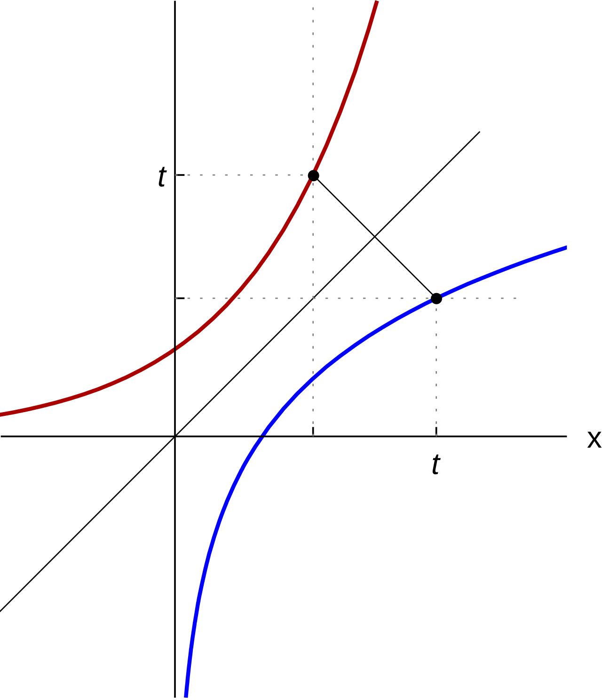
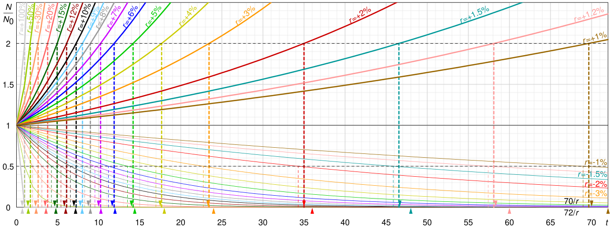
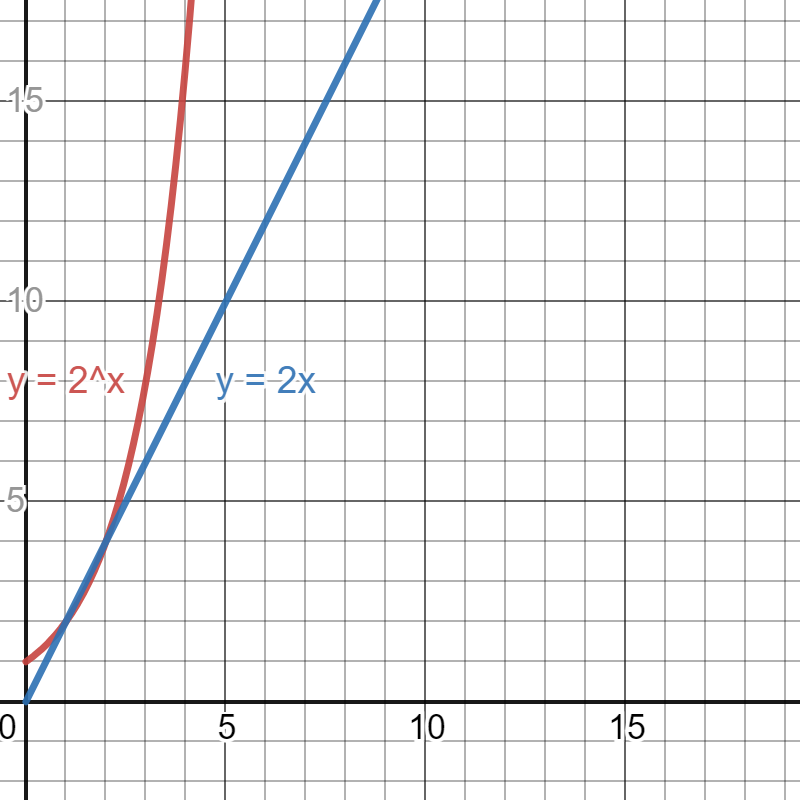

Exponential & Logarithmic Equations
Up to now the unknown has always sat on the ground floor — added, multiplied, squared. In this chapter the unknown climbs into the exponent, and that one move changes everything about how you solve. The good news is that there are only two real techniques, and you already own both of them: make the bases match, or take a logarithm of both sides. The other half of the chapter runs the same machinery in reverse, pulling x out from inside a logarithm — a job that comes with one extra chore, checking the domain, because logarithms refuse to accept negative or zero inputs. By the end you will be answering the questions people actually ask in the world: how long until this doubles, how old is this bone, when will the account reach the number I need.
By the end of this chapter you can
- Solve an exponential equation by rewriting both sides with a common base and setting the exponents equal.
- Isolate an exponential expression and solve by taking a logarithm of both sides, using natural or common logs.
- Use the product, quotient, and power rules to condense a logarithmic equation into a single logarithm.
- Convert between logarithmic form and exponential form to finish a logarithmic equation.
- State the domain restriction on every logarithm and use it to identify extraneous solutions.
- Explain why condensing can manufacture answers that the original equation never had.
- Name the excluded value of any rational expression you create, and apply the sign-flip rule when a domain inequality is divided by a negative.
- Solve applied problems involving doubling time, half-life, and compound interest.
- Fit an exponential or logarithmic model to data and interpret its constants in plain English.
Section 1Solving exponential equations

Two doors into every exponential equation
An exponential equation is any equation with the variable in an exponent: 2x = 32, 4x+2 = 8x−1, 4 · 5x + 3 = 87. You cannot divide the x out of an exponent, and you cannot subtract it down. So we need a different kind of move — and there are exactly two.
Before you pick, notice one fact that makes all of this safe. An exponential function bx (with b > 0 and b ≠ 1) never repeats a value: each output happens at exactly one input. That property has a name, the one-to-one property, and it is what lets you go from bu = bv straight to u = v. It also means a plain equation of the form bx = c has at most one answer. Be precise about what the property promises, though: it says the exponents must be equal, not that x is unique. If those exponents happen to be nonlinear — 2x2 = 16 forces x2 = 4, hence x = ±2 — then two genuine solutions are possible, and both are real.
One more comfort: bx is always positive. So an equation like 3x = −7 or 2x = 0 has no solution, and you can say so in one line without doing any algebra at all.
Door 1: make the bases match
If both sides can be written as powers of the same number, do it — then the exponents must be equal, and you are back to ordinary algebra. This is the faster door, and it is the one you should always check for first.
Fully worked example. Solve 4x+2 = 8x−1.
Step 1 — find a shared base. Both 4 and 8 are powers of 2: 4 = 22 and 8 = 23. Rewrite:
(22)x+2 = (23)x−1
Step 2 — multiply the exponents (power of a power). On the left, 2(x + 2) = 2x + 4. On the right, 3(x − 1) = 3x − 3:
22x+4 = 23x−3
Step 3 — same base, so set the exponents equal:
2x + 4 = 3x − 3
Step 4 — solve. Subtract 2x from both sides: 4 = x − 3. Add 3 to both sides: 7 = x. So x = 7.
Step 5 — check. Left side: 47+2 = 49 = 262,144. Right side: 87−1 = 86 = 262,144. They match. (Quick sanity route: 49 = 218 and 86 = 218.) ✓
Door 2: take a logarithm of both sides
Most of the time the bases refuse to match — 5x = 21 is never going to become a tidy power of anything. That is what logarithms are for. A logarithm is the tool that reaches into an exponent and pulls the variable down, because log(Mp) = p · log(M).
The order of operations matters here: isolate the exponential expression first, then take the log. Logging both sides while the exponential is still buried under a coefficient or a constant is the single most common mistake in this section.
Fully worked example. Solve 4 · 5x + 3 = 87.
Step 1 — isolate. Subtract 3 from both sides: 4 · 5x = 84. Divide both sides by 4: 5x = 21.
Step 2 — take the natural log of both sides. (Common log works identically; the calculator has both.)
ln(5x) = ln(21)
Step 3 — bring the exponent down with the power rule:
x · ln(5) = ln(21)
Step 4 — divide by ln(5). Notice that ln(5) is just a number, so this is ordinary division:
x = ln(21)/ln(5) = 3.044522/1.609438 = 1.8917 (to four decimals)
Step 5 — check. 51.8917 ≈ 21.00, so 4(21.00) + 3 = 84 + 3 = 87. ✓
One more, with base e. Solve e0.5x = 12. Because the base is already e, take the natural log and it collapses immediately: ln(e0.5x) = ln(12), so 0.5x = ln(12) = 2.484907, and multiplying both sides by 2 gives x = 4.9698. Check: e0.5(4.9698) = e2.4849 = 12.00. ✓
| What you see | Which door | First move | Result |
|---|---|---|---|
| 2x = 32 | Like bases | 32 = 25 | x = 5 |
| 9x = 27x−1 | Like bases | Both become powers of 3 | x = 3 |
| 5x = 21 | Take a log | ln both sides | x = ln21/ln5 |
| 4 · 5x + 3 = 87 | Take a log | Isolate first, then ln | x = ln21/ln5 |
| e0.5x = 12 | Take a log | Use ln (matches base e) | x = 2 ln12 |
| 3x = −7 | Neither | Notice 3x > 0 always | No solution |
- An exponential equation has the variable in an exponent; bx is always positive, so bx = (negative or zero) has no solution.
- The one-to-one property: if bu = bv then u = v. Try this door first.
- Otherwise isolate the exponential, then take a log of both sides and use log(Mp) = p log(M).
- Any base of logarithm gives the same answer — ln(21)/ln(5) = log(21)/log(5).
Section 2Solving logarithmic equations

One logarithm, then convert
A logarithmic equation has the variable inside a logarithm. The whole strategy is a single sentence: get down to one logarithm, then convert to exponential form. The conversion itself is just the definition of a logarithm, read from right to left:
logb(M) = c means exactly bc = M
Say it out loud as "the base, raised to the answer, gives the inside." So ln(x) = 4 converts to e4 = x, giving x = 54.598. And log5(2x + 3) = 2 converts to 52 = 2x + 3, so 25 = 2x + 3, so 22 = 2x, so x = 11.
Condensing first: the three rules you need
When the equation has two or more logarithms, you cannot convert yet — there is no single log to convert. First you condense: squeeze the logarithms into one using the three rules below. All three require the same base throughout, and all three read most usefully right-to-left when you are condensing.
| Rule | Statement | Use it to condense | Valid when |
|---|---|---|---|
| Product | logb(M) + logb(N) = logb(MN) | A sum becomes a product inside | M > 0 and N > 0 |
| Quotient | logb(M) − logb(N) = logb((M)/(N)) | A difference becomes a quotient inside | M > 0 and N > 0 |
| Power | p · logb(M) = logb(Mp) | A coefficient becomes an exponent inside | M > 0 |
Read that last column carefully — it is the seed of the whole next section. Each rule is a two-way street only while every argument stays positive.
Fully worked example. Solve log2(x) + log2(x − 2) = 3.
Step 0 — write the domain before you touch the algebra. The first log needs x > 0. The second needs x − 2 > 0, that is x > 2. Both must hold, so the domain is x > 2. Any answer at or below 2 is dead on arrival.
Step 1 — condense with the product rule:
log2(x(x − 2)) = 3
Step 2 — convert to exponential form. Base 2, answer 3, inside x(x − 2):
x(x − 2) = 23 = 8
Step 3 — expand and set equal to zero:
x2 − 2x = 8, so x2 − 2x − 8 = 0
Step 4 — factor. We need two numbers multiplying to −8 and adding to −2: those are −4 and +2.
(x − 4)(x + 2) = 0, so x = 4 or x = −2
Step 5 — apply the domain. We need x > 2. Keep x = 4. Throw out x = −2.
Step 6 — check the survivor. log2(4) + log2(4 − 2) = log2(4) + log2(2) = 2 + 1 = 3. ✓ The solution is x = 4.
Always finish by checking the domain
Here is a second worked case, this time with a difference and a common (base 10) logarithm. Solve log(x + 3) − log(x) = 1.
Domain first: x + 3 > 0 gives x > −3, and x > 0 gives x > 0. Both together: x > 0.
Condense with the quotient rule: log((x + 3)/(x)) = 1. That step manufactures a rational expression, so name its excluded value immediately: (x + 3)/(x) is undefined at x = 0, where the denominator vanishes. Here the domain x > 0 has already ruled that out, but say it anyway — it is what makes the next move legal. Convert to exponential form, remembering that a bare "log" means base 10 and the answer 1 sits in the exponent: (x + 3)/(x) = 101 = 10. Multiply both sides by x (permitted precisely because x ≠ 0): x + 3 = 10x. Subtract x: 3 = 9x. Divide by 9: x = (1)/(3).
Is (1)/(3) > 0? Yes, so it survives the domain. Check it: log((1)/(3) + 3) − log((1)/(3)) = log((10)/(3)) − log((1)/(3)) = log(((10)/(3)) ÷ ((1)/(3))) = log(10) = 1. ✓ The solution is x = (1)/(3).
When the domain inequality needs a sign flip
Every domain you have written so far solved itself in one step, because the variable carried a positive coefficient. Some arguments run backward. Consider log(4 − x), which demands 4 − x > 0. Subtract 4 from both sides to get −x > −4, and now you have to divide by −1.
Here is the rule that governs that move, and it is the one students lose the most points to: multiplying or dividing an inequality by a negative number reverses the direction of the inequality sign. So −x > −4 becomes x < 4 — not x > 4. (Equations are exempt; only inequalities flip. That is why none of the equation-solving steps above needed this.)
Never take the flip on faith — test one number. Try x = 0: the argument is 4 − 0 = 4, positive, so log(4) is defined, and indeed 0 < 4. Try x = 10: the argument is 4 − 10 = −6, so log(−6) is undefined, and indeed 10 is not less than 4. Had you skipped the flip and written x > 4, you would have declared every legal input illegal and every illegal input legal — a perfectly inverted answer.
A quick way to dodge the issue entirely: move the variable to the side where it is already positive. From 4 − x > 0, add x to both sides to get 4 > x, then read it right to left as x < 4. Same answer, no flip required.
- Condense to one logarithm, then convert: logb(M) = c becomes bc = M.
- Condense with the product, quotient, and power rules — all require the same base.
- Every logarithm demands a positive argument; write the domain restriction before you begin.
- If condensing creates a fraction, state its excluded value — the denominator may never be zero.
- Solving a domain inequality by dividing by a negative reverses the inequality sign: −x > −4 becomes x < 4.
- Converting often produces a quadratic, so expect up to two candidates and expect to reject some.
Section 3Extraneous solutions

Where the fake answers come from
An extraneous solution is a number that satisfies some equation you produced along the way but does not satisfy the equation you started with. It is not a mistake in your arithmetic. It is a side effect of a legal step, and knowing which steps do it is how you stay ahead of it.
Here is the mechanism, stated as plainly as it can be stated. Look again at the product rule:
logb(M) + logb(N) = logb(MN)
The left side requires M > 0 and N > 0 — two separate demands. The right side only requires the product MN > 0, and a product of two negatives is positive. So the condensed form quietly accepts a whole family of inputs the original refused. Condensing does not break the equation; it widens the door. Then the quadratic you solve is the door-widened version, and it can hand you a number that would have been turned away at the original door.
The power rule does it too. Writing 2 log(x) as log(x2) turns a left side that demands x > 0 into a right side that accepts any x ≠ 0, negatives included. That is why 2 log(x) = log(36) yields x2 = 36 and the pair x = ±6, of which only x = 6 satisfies the original equation — both candidates are perfectly real numbers, but log(−6) does not exist, so −6 is extraneous.
A worked case: one keeper, one impostor
Fully worked example. Solve log3(x − 5) + log3(x + 3) = 2.
Step 0 — domain. Need x − 5 > 0, so x > 5. Need x + 3 > 0, so x > −3. The stricter one wins: the domain is x > 5.
Step 1 — condense: log3((x − 5)(x + 3)) = 2
Step 2 — convert: (x − 5)(x + 3) = 32 = 9
Step 3 — expand the left side. (x − 5)(x + 3) = x2 + 3x − 5x − 15 = x2 − 2x − 15. So:
x2 − 2x − 15 = 9
Step 4 — subtract 9 from both sides: x2 − 2x − 24 = 0
Step 5 — factor. Two numbers multiplying to −24 and adding to −2: those are −6 and +4.
(x − 6)(x + 4) = 0, so x = 6 or x = −4
Step 6 — test each against the domain x > 5.
x = 6: passes. Verify in the original: log3(6 − 5) + log3(6 + 3) = log3(1) + log3(9) = 0 + 2 = 2. ✓
x = −4: fails, since −4 is not greater than 5. Verify why, in the original: log3(−4 − 5) = log3(−9), and there is no power of 3 that equals −9. Undefined. Extraneous.
And now watch the mechanism in action. Put x = −4 into the condensed equation: (−9)(−1) = 9, which is perfectly true. Two negatives multiplied to a positive. The condensed equation was happy; the original was not. That gap is exactly where extraneous solutions live. The answer is x = 6, alone.
How to check without a calculator
You do not need to evaluate anything to reject a candidate. Substitute it into every logarithm's argument in the original equation and ask only one question: is that number positive? If any argument comes out zero or negative, the candidate is extraneous. Nothing else needs computing.
Two warnings worth internalizing. First, a positive candidate can still be extraneous — in log(x − 5) the value x = 3 is positive but produces log(−2), which is undefined. "Positive answer" is not the test; "positive argument" is. Second, exponential equations from Section 1 do not generate extraneous solutions this way, because bx accepts every real x. The domain chore belongs to logarithms.
| Equation | Domain | Candidates | Verdict |
|---|---|---|---|
| log3(x−5) + log3(x+3) = 2 | x > 5 | 6 and −4 | Keep 6; −4 extraneous |
| log2(x) + log2(x−2) = 3 | x > 2 | 4 and −2 | Keep 4; −2 extraneous |
| 2 log(x) = log(36) | x > 0 | 6 and −6 | Keep 6; −6 extraneous |
| log(x+3) − log(x) = 1 | x > 0 | (1)/(3) | Keep — none rejected |
| 4 · 5x + 3 = 87 | all real x | 1.8917 | No domain issue at all |
- An extraneous solution solves a later equation in your work but not the original one.
- Condensing widens the domain: two negatives can multiply to a positive, so the condensed equation accepts inputs the original rejects.
- The power rule does the same thing — log(x2) accepts negatives that 2 log(x) does not.
- Test candidates in the original equation, checking only that every logarithm's argument is positive.
Section 4Applications: doubling, half-life, and interest

Doubling time
Continuous growth is modeled by A = A0ert, where A0 is the starting amount, r is the continuous rate as a decimal, and t is time. Every one of these problems is the same exponential equation from Section 1 wearing a costume.
Fully worked example. A bacterial culture starts with 500 cells and grows continuously at 6% per hour, so A(t) = 500e0.06t. How long until there are 2000 cells?
Step 1 — set up: 2000 = 500e0.06t
Step 2 — isolate the exponential. Divide both sides by 500: 2000/500 = 4, so e0.06t = 4.
Step 3 — take the natural log of both sides (base is e, so ln is the natural choice): 0.06t = ln(4) = 1.386294.
Step 4 — divide by 0.06: t = 1.386294/0.06 = 23.1049 hours, so about 23.1 hours.
Step 5 — check. e0.06(23.1049) = e1.386294 = 4, and 500(4) = 2000. ✓
Now the shortcut. Doubling time is how long it takes for any starting amount to double, and it never depends on A0: set A = 2A0, divide both sides by A0, and you get 2 = ert, so t = ln(2)/r. For our culture, doubling time = 0.693147/0.06 = 11.5525 hours. Sanity check the two results against each other: going from 500 to 2000 is exactly two doublings, and 2(11.5525) = 23.105 hours. Same answer. ✓
Half-life
Decay runs the identical algebra with a shrinking factor. The most convenient form uses the half-life h directly: A = A0((1)/(2))t/h. Read it as "cut in half once per half-life."
Fully worked example. Carbon-14 has a half-life of 5730 years. A bone fragment retains 62% of its original carbon-14. How old is it?
Step 1 — set up. "62% remains" means A/A0 = 0.62, so 0.62 = ((1)/(2))t/5730. Notice A0 cancels — you never needed to know the original amount.
Step 2 — take the natural log of both sides: ln(0.62) = (t/5730) · ln((1)/(2)).
Step 3 — evaluate the two logs. ln(0.62) = −0.478036 and ln(0.5) = −0.693147. Both are negative, which is expected: both inputs are less than 1.
Step 4 — divide both sides by −0.693147. The negatives cancel, leaving a positive number: t/5730 = (−0.478036)/(−0.693147) = 0.689660.
Step 5 — multiply both sides by 5730: t = 0.689660 × 5730 = 3951.75, so about 3950 years old.
Step 6 — check for reasonableness. 62% remaining is more than half, so the bone should be younger than one half-life. And 3951.75 < 5730. ✓
Interest: the money version of the same equation
Compound interest uses A = P(1 + r/n)nt, where P is the principal, r the annual rate as a decimal, n the number of compoundings per year, and t the years. If interest compounds continuously, it becomes A = Pert.
Fully worked example. You deposit $3000 at 4.5% annual interest compounded monthly. When does the balance reach $5000?
Step 1 — identify the pieces: P = 3000, r = 0.045, n = 12, A = 5000. Set up:
5000 = 3000(1 + 0.045/12)12t
Step 2 — simplify inside the parentheses: 0.045/12 = 0.00375, so the base is 1.00375.
Step 3 — isolate the exponential. Divide both sides by 3000: 5000/3000 = 5/3 = 1.666667, so (1.00375)12t = 1.666667.
Step 4 — take the natural log of both sides and bring the exponent down: 12t · ln(1.00375) = ln(1.666667).
Step 5 — evaluate: ln(1.00375) = 0.0037430 and ln(1.666667) = 0.510826.
Step 6 — divide: 12t = 0.510826/0.0037430 = 136.475 months.
Step 7 — divide by 12: t = 136.475/12 = 11.373, so about 11.4 years.
Step 8 — check, and then think. (1.00375)136.475 = 1.66667, and 3000(1.66667) = 5000. ✓ But because this account only posts interest monthly, the balance does not actually cross $5000 mid-month — you need the 137th posting, which is 11 years and 5 months. Reading the units of the answer is part of the answer.
| Situation | Model | Solve for time by | Shortcut |
|---|---|---|---|
| Continuous growth | A = A0ert | Divide by A0, take ln, divide by r | Doubling time = ln(2)/r |
| Continuous decay | A = A0e−rt, with r > 0 | Divide by A0, take ln, divide by −r | Half-life = ln(2)/r |
| Known half-life | A = A0((1)/(2))t/h | Divide by A0, take ln, solve for t | A0 always cancels |
| Compounded n times/year | A = P(1 + r/n)nt | Divide by P, take ln, divide by n ln(1+r/n) | Answer lands in periods — convert |
| Compounded continuously | A = Pert | Divide by P, take ln, divide by r | Fastest growth for a given r |
- Continuous growth or decay: A = A0ert; solve for t by isolating the exponential and taking ln.
- Doubling time = ln(2)/r, independent of the starting amount.
- With a known half-life h, use A = A0((1)/(2))t/h; the ratio A/A0 is all you need.
- Compound interest is A = P(1 + r/n)nt — watch whether your answer is in periods or years.
Section 5Modeling with exponential and logarithmic functions

Fitting an exponential model to two points
A general exponential model is y = abx. It has two unknown constants, so two data points are enough to pin it down. The trick that makes this easy: if one of your points has x = 0, then b0 = 1 and a falls out for free.
Fully worked example. A town's population was 12,000 at the start of the study (t = 0) and 15,000 five years later (t = 5). Fit y = abt.
Step 1 — use the point (0, 12000): 12000 = a · b0 = a · 1, so a = 12000.
Step 2 — use the point (5, 15000) with a now known: 15000 = 12000 · b5.
Step 3 — divide both sides by 12000: 15000/12000 = 1.25, so b5 = 1.25.
Step 4 — take the fifth root, which means raising both sides to the (1)/(5) power: b = 1.251/5. Compute it with logs if you like: ln(1.25) = 0.223144, divided by 5 gives 0.0446287, and e0.0446287 = 1.045640. So b ≈ 1.04564.
Step 5 — write the model: y = 12000(1.04564)t.
Step 6 — check it against the data you were given. At t = 5: 12000(1.04564)5 = 12000(1.25) = 15000. ✓ At t = 0: 12000(1) = 12000. ✓
Reading the model out loud
A model you cannot interpret is just decoration. In y = abx, the constant a is the initial value — the output when x = 0. The constant b is the growth factor: the number you multiply by each time x increases by one. And b − 1, written as a percent, is the growth rate.
So our model says: the town started at 12,000 people and grows by a factor of 1.04564 per year — that is 1.04564 − 1 = 0.04564, or about 4.56% per year. If b had come out less than 1, say 0.92, we would call it a decay factor and report an 8% annual decline.
Now use the model, which means solving the exponential equations from Section 1 all over again. Predict: the population at t = 12 is 12000(1.04564)12. Since 12 × 0.0446287 = 0.535544 and e0.535544 = 1.708382, we get 12000(1.708382) = 20,500 people. Solve backward: when does the town reach 20,000? Set 20000 = 12000(1.04564)t, divide by 12000 to get (1.04564)t = 1.666667, take ln of both sides for t · 0.0446287 = 0.510826, and divide: t = 11.45 years.
One honest caveat worth saying to yourself every time: a model fit to two points is a guess about the shape, and exponential guesses grow absurd if you push them far. This town model predicts nearly 98,000 people in 47 years and more than a million in a century. Models describe the range they were built from; extrapolate gently.
Logarithmic models and the straight-line trick
A logarithmic model, y = a + b ln(x), does the opposite job: it rises quickly at first and then flattens, which fits things like practice-and-performance or perceived loudness. Its interpretation is beautiful once you see it — b is how much y gains every time x multiplies by a fixed factor.
Fully worked example. A skill study gives a score model S = 45 + 12 ln(x), where x is hours of practice.
At x = 1: S = 45 + 12 ln(1) = 45 + 12(0) = 45. At x = 10: S = 45 + 12(2.302585) = 45 + 27.63 = 72.63. At x = 20: S = 45 + 12(2.995732) = 45 + 35.95 = 80.95.
Notice what doubling did. From 10 to 20 hours, the score rose 80.95 − 72.63 = 8.32 points — and 12 ln(2) = 12(0.693147) = 8.32. Every doubling of practice adds the same 8.32 points, whether you go from 5 to 10 hours or from 500 to 1000. That is the shape of diminishing returns, written as algebra.
Going backward, how many hours to reach a score of 90? Set 90 = 45 + 12 ln(x). Subtract 45: 45 = 12 ln(x). Divide by 12: ln(x) = 3.75. Convert to exponential form: x = e3.75 = 42.52, so about 42.5 hours. Check: 45 + 12 ln(42.52) = 45 + 12(3.75) = 90. ✓
Finally, the trick that makes real-world curve fitting possible. Take the natural log of both sides of y = abx: ln(y) = ln(a) + x ln(b). Look at the shape of that — it is a straight line in x, with intercept ln(a) and slope ln(b). For our town, ln(12000) = 9.3927 and ln(1.04564) = 0.044629, so ln(y) = 9.3927 + 0.044629t. This is why data plotted on semi-log paper straightens out when the underlying growth is exponential, and it is exactly how spreadsheets and calculators produce an exponential regression: they take logs, fit a line, and convert back.
| Model | Form | Signature in the data | Constant to interpret |
|---|---|---|---|
| Linear | y = mx + c | Equal differences per step | m = amount added per step |
| Exponential growth | y = abx, b > 1 | Equal ratios per step | b − 1 = percent growth per step |
| Exponential decay | y = abx, 0 < b < 1 | Constant fraction remains per step | 1 − b = percent lost per step |
| Logarithmic | y = a + b ln(x) | Rises fast, then flattens; needs x > 0 | b ln(2) = gain per doubling of x |
- Fit y = abx from two points; a point at x = 0 hands you a immediately.
- In y = abx: a is the initial value, b is the growth factor, and b − 1 is the percent change per step.
- In y = a + b ln(x), the constant b gives a fixed gain per doubling of x — diminishing returns.
- Taking ln of y = abx gives the line ln(y) = ln(a) + x ln(b), which is how regression tools fit exponentials.
The chapter in one breath
- An exponential equation puts the variable in the exponent, and there are only two doors: match the bases, or take a logarithm of both sides.
- The one-to-one property (bu = bv gives u = v) handles the tidy cases; isolate the exponential first, then log, handles the rest.
- A logarithmic equation is solved by condensing to one log and converting: logb(M) = c becomes bc = M.
- Every logarithm demands a positive argument, so write the domain restriction before you solve, not after — and remember that dividing an inequality by a negative flips the sign.
- Extraneous solutions appear because condensing widens the domain — two negatives multiply to a positive — so always test candidates in the original equation.
- Doubling time is ln(2)/r and half-life problems use A = A0((1)/(2))t/h; the starting amount cancels in both.
- Compound interest, A = P(1 + r/n)nt, is the same equation with money in it — mind whether the answer is in periods or years.
- To model, fit y = abx from two points, read a as the initial value and b − 1 as the percent change, and remember that constant ratios mean exponential.
ReferenceWords worth knowing
A quick reference for the vocabulary in this chapter — skim it now, and come back whenever a word slows you down mid-problem.
- Argument (of a logarithm)
- The expression inside the logarithm. In log3(x − 5) the argument is x − 5, and it must be strictly greater than zero.
- Base
- The number being raised to a power, or the subscript on a logarithm. Must be positive and not equal to 1 for either to be well behaved.
- Change-of-base formula
- logb(M) = ln(M)/ln(b) = log(M)/log(b) — how you evaluate an unusual base on a calculator that only has ln and log.
- Common logarithm
- A logarithm with base 10, written simply as log(x) with no subscript shown.
- Compound interest formula
- A = P(1 + r/n)nt, with principal P, annual rate r, n compoundings per year, and t years.
- Condensing
- Using the product, quotient, and power rules to combine several logarithms into a single logarithm — the required first step before converting.
- Continuous growth model
- A = A0ert, where r is the continuous rate; positive r is growth and negative r is decay.
- Decay factor
- The value b in y = abx when 0 < b < 1; the quantity 1 − b is the fraction lost per step.
- Domain restriction
- The condition every logarithm imposes: its argument must be positive. Write it down before solving.
- Doubling time
- How long a continuously growing quantity takes to double: t = ln(2)/r. Independent of the starting amount.
- Euler's number (e)
- The irrational constant 2.71828…, the natural base for growth and decay; its logarithm is written ln.
- Excluded value
- An input that makes the denominator of a rational expression zero, so the expression is undefined there. In (x + 3)/(x) the excluded value is x = 0.
- Exponential equation
- An equation with the variable in an exponent, such as 4 · 5x + 3 = 87.
- Extraneous solution
- A candidate that satisfies an equation produced during your work but fails the original — typically because it makes a logarithm's argument zero or negative.
- Growth factor
- The value b in y = abx when b > 1; the quantity b − 1 is the percent growth per step.
- Half-life
- The time for a decaying quantity to fall to half its amount; modeled by A = A0((1)/(2))t/h.
- Logarithm
- The exponent that answers "what power of b gives M?" — logb(M) = c means exactly bc = M.
- Logarithmic equation
- An equation with the variable inside a logarithm, such as log2(x) + log2(x − 2) = 3.
- Natural logarithm
- A logarithm with base e, written ln(x); the default choice when the equation already contains e.
- One-to-one property
- Since bx never repeats an output, bu = bv forces u = v; the basis of the like-bases method.
- Power rule for logarithms
- p · logb(M) = logb(Mp), valid for M > 0; used right-to-left it pulls a variable out of an exponent.
- Product rule for logarithms
- logb(M) + logb(N) = logb(MN), valid when M > 0 and N > 0.
- Quotient rule for logarithms
- logb(M) − logb(N) = logb((M)/(N)), valid when M > 0 and N > 0.
- Sign-flip rule
- Multiplying or dividing an inequality by a negative number reverses its direction: −x > −4 becomes x < 4. Equations are unaffected.